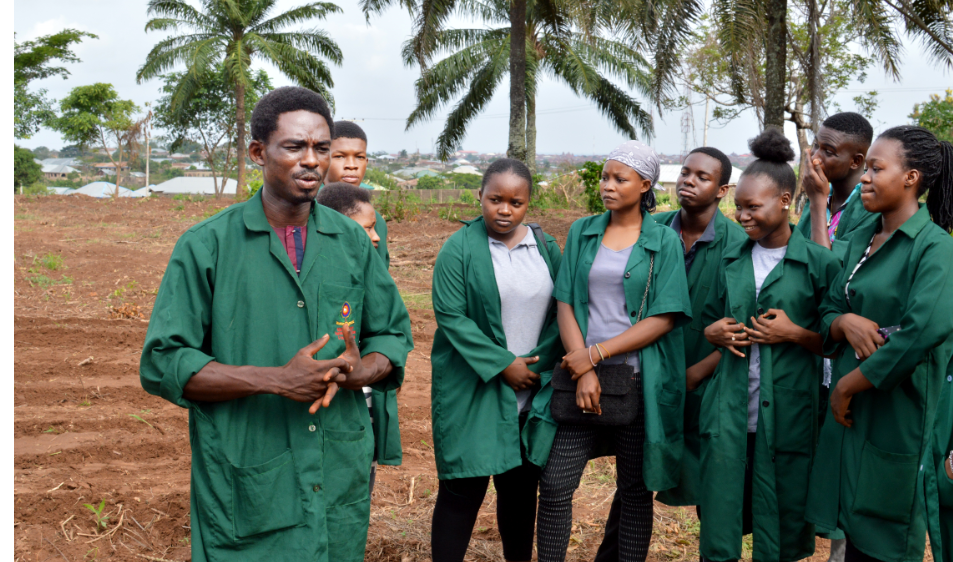

Hello.
I am an Agriculturist who advises farmers on soil management,Animal breeding, and crop protection
Conduct seminars, and workshops with large numbers of farmers

My Skills.
Programs Offered
Field research into environmental conditions, product effectiveness and animal nutrition, and health.
Visits farms and production sites for evaluations
Responds to questions from individual farmers, farming associations,and the general public about the health of food, soil, and environment
Conduct seminars, and workshops with large numbers of farmers
Demonstrates new products or services
Please see my programs page for more information.